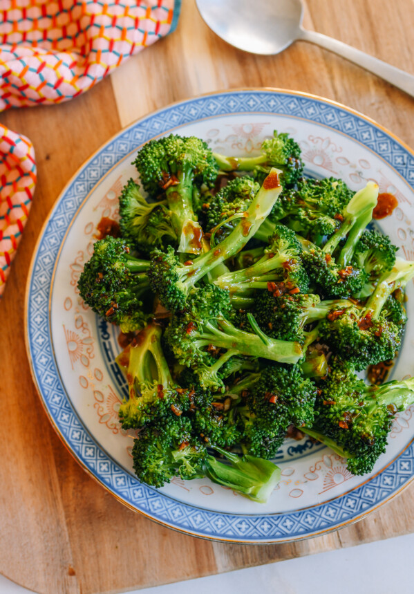

Steamed Broccoli Recipes

Steamed Broccoli
A very tasty food with main the ingredient of broccoli will be a good
experience and taste.
This recipe can be found in the source, but as of these days, it's easy to
find because of internet. Many foreign love this recipe.
ingredients
forget about steps, this is just for practice purposes
- 1 pound broccoli florets
- 1 tablespoon neutral oil
- 1 clove garlic (minced)
- 2 tablespoons water
- 1 tablespoon oyster sauce or vegetarian oyster sauce
- 2 teaspoons light soy sauce
- 1/2 teaspoon sesame oil
- 1/8 teaspoon ground white pepper or black pepper